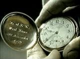
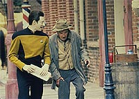
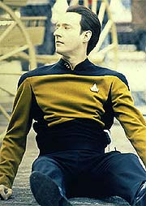
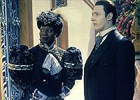
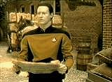
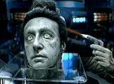

|
MANCHETE
DO EPISDIO
Histria
apela para mirabolantes idias
sci-fi, mas acerta em cheio com Data
Episdio
anterior | Prximo
episdio
Sinopse:
Data Estelar: 45959.1.
 A
Enterprise chamada Terra para investigar evidncias de
visitas extraterrestres ocorridas no final do sculo 19, em San
Francisco. Investigando uma caverna, cientistas encontraram traos
de ondas trilicas, resultado de um sistema de energia bastante
especfico usado por apenas algumas poucas espcies aliengenas.
Mas a maior evidncia indicando a presena de interferncia
estranha naquele perodo a cabea de Data, encontrada tambm
na caverna.
Conforme a pea analisada e a identificao de que de fato
a cabea do andride confirmada, todos ficam desconfortveis
com o aparente sinal da morte iminente de Data. Todos menos o prprio,
que v o fato como um sinal de que ele no precisa se preocupar
com sua possvel imortalidade, algo que o separava de sua ambio
de se tornar mais humano.
Com base nas evidncias, surge a hiptese de que os aliengenas
podem ser capazes de se disfarar como humanos. Os traos
encontrados na caverna apontam para o planeta Devidia II. A
Enterprise ruma para l, mas no encontra nenhum sinal de vida. Em
compensao, anomalias temporais so detectadas, juntamente com
ondas trilicas idnticas s encontradas na Terra. Riker leva um
grupo avanado superfcie, excluindo propositalmente Data. O
andride tenta argumentar contrariamente, mas Picard prefere a
cautela. No planeta, Deanna Troi sente a presena de formas de vida
atormentadas --humanos.
 Data
encontra traos de perturbaes "sincrnicas" na rea,
que implicam que todas as formas de vida no planeta esto fora de
fase com a tripulao da Enterprise, apenas por uma frao de
segundo. possvel usar um campo subespacial para alinhar os dois
grupos, mas a nica ferramenta sensvel o suficiente para o
trabalho o crebro de Data. Ele se transporta e usa um gerador
subespacial para se alinhar com os habitantes do planeta. Ele se
comunica com o grupo avanado por meio de seu comunicador,
modificado para suplantar a mudana de fase. Em compensao, a
comunicao de apenas uma via: Data no pode ouvir seus
colegas.
Ao se ajustar fase dos habitantes locais, Data observa aliengenas
sem rosto. Ele encontra um criatura aprisionada em forma de cobra,
que transportada por dois dos aliengenas. Um tornado temporal
de algum tipo ocorre e Data perde contato com o grupo, apenas um
segundo antes de o gerador de campo subespacial aparecer na
realidade em que est o grupo avanado, sem o andride.
Data, em contrapartida, desperta em San Francisco em 1893 e procura
um quarto de hotel para se abrigar. Sem dinheiro, ele no pode
alugar o quarto, mas ele descobre que h um jogo de pquer
acontecendo no hotel. Ele entra no jogo e ganha dinheiro suficiente
para se manter indefinidamente. Ele fica amigo do atendente do hotel
e o contrata para adquirir suprimentos para suas "invenes".
 Enquanto
o atendente corre para obter os suprimentos, um mendigo com quem
Data falou antes abordado por dois humanos bem-vestidos, um
carregando uma bengala e outro, uma maleta. Enquanto o mendigo d
suas ltimas tossidas, rumo a uma possvel morte de clera, um
dos visitantes toca a maleta, que emite um raio que atinge o velho.
Ele padece e um globo de energia sai de seu corpo e vai at a
maleta. A dupla fecha a maleta e se afasta.
Simultaneamente, no sculo 24, a misso continua para a tripulao
da Enterprise, que est preocupada com o destino de Data. Geordi
comea a trabalhar em um equipamento para criar um campo
subespacial mais estvel e melhor. Guinan, logo em seguida, diz a
Picard, de forma pouco esclarecedora, que ele deve acompanhar o
grupo avanado, caso contrrio os dois nunca iro se conhecer. Em
San Francisco, a inveno misteriosa de Data continua avanando,
mas ele interrompe o trabalho quando v um anncio em um jornal
local para uma recepo literria, patrocinada por uma rica
socialite: Guinan.
Nessa recepo, Guinan e Samuel Clemens (tambm conhecido como
Mark Twain) esto tendo uma longa discusso quando Data invade o
local. Ele tenta falar com Guinan, mas ela no mostra sinais de
conhec-lo. Quando ele menciona uma nave estelar, ela rapidamente
assume um ar de amizade e o arrasta para um lugar mais vazio, no
terrao. Ele explica a ela quem ele e de onde ele vem. A explicao
interrompida, entretanto, pela atitude bisbilhoteira do sr.
Clemens, que aparentemente ouviu tudo que Data disse.
 No
sculo 24, Picard assume o comando do grupo avanado e manda Worf
de volta nave. O campo ativado e sintonizado, e eles se
encontram no mesmo local em que estavam os aliengenas a quem Data
se referiu: brilhantes, sem face, sentados e se alimentando. Os
globos de energia, sua "comida", que Troi suspeita que
sejam traos dos ltimos momentos da vida de pessoas, e que elas
todas morreram aterrorizadas. De repente, um portal brilhante se
abre e dois aliengenas adentram, um deles carregando uma maleta. A
maleta conectada a um aparato perto do grupo avanado, e mais
globos entram no sistema. O outro aliengena est carregando uma
criatura similar a uma cobra, que reativa o portal. Os aliengenas
voltam ao portal. S que desta vez seguidos pelo grupo avanado. O
portal de fecha.
Continua...
Comentrios:
"Time's
Arrow, Part I" tem um dos mais interessantes prlogos
apresentados em A Nova Gerao: a imagem da cabea de Data
toda danificada um terrvel aviso do que est para acontecer
com o andride. Preocupao que se torna ainda mais intensa
quando nos lembramos de que se trata do final da quinta temporada.
Se h um bom momento para dispensar um personagem regular, o
hiato entre uma temporada e outra.
Por sorte, o desespero nunca chegou a tomar conta. Picard j quase
nos deixou, na virada do terceiro para o quarto ano; do quarto para
o quinto era a vez de Worf. Nenhuma das ameaas se cumpriu.
Portanto, no h razo para crer que seria diferente com Data.
Entretanto, dessa vez diferente. Agora existe uma prova irrefutvel
e indiscutvel da morte de Data: sua cabea foi perdida no passado
da Terra e, como ele mesmo diz, difcil imaginar que essa situao
v ser mudada. O que deixa uma tremenda dvida na cabea do
telespectador: como os roteiristas pretendem trazer nosso andride
favorito vivo e bem para o prximo ano?
A resposta, como no poderia deixar de ser, vai exigir grandes
esforos de high-concepts e mirabolantes solues de fico
cientfica de qualidade duvidosa. Em termos mais simples: "Time's
Arrow, Part I" tem mais tecnobaboseira do que os limites
saudveis para qualquer f de Jornada nas Estrelas. As
ondas trilicas e as mudanas de fase subespaciais poderiam e
deveriam ter sido deixadas de fora, em benefcio de uma histria
que j era forte por si mesma, sem depender desses elementos
amalucados. Tudo que a tecnobaboseira faz aqui tornar o episdio
mais difcil de entender, mas no o torna mais interessante por
essa razo. Uma pena, sem dvida.
Mesmo assim, trata-se de uma hora das mais interessantes,
principalmente na poro livre da tecnobaboseira, em que Data
precisa lidar com um desafio maior que ondas trilicas --o mundo
dos humanos no sculo 19. A presena de Guinan na Terra ajuda a
aumentar o mistrio, o que favorecido pela
"necessidade" de Picard acompanhar o grupo avanado para
poder conhec-la, o que finalmente parece colocar alguma explicao
duradoura e misteriosa relao do capito com a El-Aurian.
 Data
lidando com seu "amigo" atendente de hotel, dando a ele
suntuosas gorjetas, esfolando arrogantes jogadores de pquer,
construindo seu suposto "motor para carruagem sem cavalo"
e invadindo a reunio da socialite Guinan so momentos
interessantes, somente suplantados pelo sabor de encontrar o
escritor Mark Twain (ou Samuel Clemens, como ele prefere) em San
Francisco. Embora seu papel na trama s se torne mais interessante
na continuao do episdio, s sua presena "histrica"
j serve como um belo aperitivo.
Data sem dvida a fora motriz do episdio, e o personagem
recompensado por isso no s pelo tempo de tela e as boas cenas,
mas principalmente pela nova apreciao que ganhamos do andride
em sua percepo da morte. O que para todos, por ser inevitvel,
desagradvel, para ele extremamente salutar, justamente por
ser absolutamente incerto. Morrer para todos a consequncia
natural da vida, e algo que no se quer, mas para Data uma
chance de mais uma vez se tornar mais "vivo". S morre
quem vive. Nunca nenhum episdio havia explorado esse
"complexo de vampiro" do andride, e a ocasio para tal
investigao no poderia ser melhor do que esta.
O retorno tambm vem para os outros regulares, especialmente Riker
e Geordi, que precisam lidar com o que para eles algo
extremamente desconfortvel. Ningum est se sentindo bem com a
morte certa do andride e os atores fazem um bom trabalho para que
percebamos isso.
 O
grande problema do episdio todo que ele tem "metade da
histria" que j est resolvida --o "mistrio"
dos aliengenas j est muito claro na cabea dos aliengenas
quando termina a primeira parte, o que nos deixa apenas com a trama
da sina de Data para trazer algum interesse. Por causa disso, o
"cliffhanger" no poderia ser mais decepcionante: o grupo
avanado segue os aliengenas pelo portal brilhante, sem saber que
do outro lado os espera a San Francisco do sculo 19. Totalmente
anticlimtico, porque ns sabemos para onde eles esto indo,
embora eles no tenham certeza. De toda forma, pela primeira vez na
srie temos um "cliffhanger" que no desperta a menor
curiosidade sobre como tudo vai acabar.
Sorte que a cabea deteriorada de Data ainda est guardadinha na
Enterprise, nos lembrando de que ainda h algo a esperar do incio
da sexta temporada...
Citaes:
Data - "It seems
clear that my life is to end in the late 19th century."
("Parece claro que minha vida deve terminar no fim do sculo
19.")
Riker - "Not if we can help it."
("No se pudermos evitar.")
Data - "There is no way anyone can prevent it, sir. At some
future date I will be transported back to 19th century Earth where I
will die. It has occurred. It will occur."
("No h modo de algum evitar isso, senhor. Em alguma data
futura serei transportado de volta Terra do sculo 19 onde eu
morrerei. Aconteceu. Vai acontecer.")
Riker - "It's just that our mental pathways have become
accustomed... to your sensory input patterns."
(" s que nossas estruturas mentais ficaram acostumadas...
aos seus padres de input sensoriais.")
Data - "I understand. I am also fond of you, commander. And
you as well, counselor."
("Eu entendo. Eu tambm gosto de voc, comandante. E de voc
tambm, conselheira.")
Guinan - "Do you remember the first time we met?"
("Voc se lembra da primeira vez que nos encontramos?")
Picard - "Of course."
("Claro.")
Guinan - "Don't be so sure. I just mean... if you don't go
on this mission, we'll never meet."
("No esteja to certo. Quero dizer... se voc no for
nesta misso, nunca vamos nos conhecer.")
Trivia:
 Originalmente Rick Berman e Michael Piller haviam decidido que a
quinta temporada da Nova Gerao no terminaria com a
primeira parte de um episdio duplo, como j havia acontecido na
terceira ("The Best of Both Worlds") e na quarta ("Redemption")
temporadas. Porm, com os planos para uma nova srie de Jornada,
Deep Space Nine, os dois acharam melhor fazer um episdio
duplo com a primeira parte ao final da corrente temporada para que no
surgissem boatos de que a Nova Gerao acabaria em seu
quinto ano.
Originalmente Rick Berman e Michael Piller haviam decidido que a
quinta temporada da Nova Gerao no terminaria com a
primeira parte de um episdio duplo, como j havia acontecido na
terceira ("The Best of Both Worlds") e na quarta ("Redemption")
temporadas. Porm, com os planos para uma nova srie de Jornada,
Deep Space Nine, os dois acharam melhor fazer um episdio
duplo com a primeira parte ao final da corrente temporada para que no
surgissem boatos de que a Nova Gerao acabaria em seu
quinto ano.
"Time's Arrow" mostra a primeira real viagem no
tempo da tripulao da Nova Gerao. Durante a pr-produo
do episdio, foi discutido se Picard e cia. voltariam para a dcada
de 90, 60 ou 30, mas acabaram mesmo voltando em outro sculo que no
o 20.
Trs veteranos da Nova Gerao fazem parte do elenco deste
episdio de final de temporada. Ken Thorley ("Ensign
Ro", do quinto ano, e "Schisms", do
sexto ano), Jehhr Hardin ("When the
Bough Breaks", do primeiro ano) e Marc Alaimo, que
finalmente interpreta um humano, aps aparecer como aliengenas
diferentes em diversos episdios ("Lonely
Among Us", como um Antican, "The
Neutral Zone", como um Romulano, e "The
Wounded", como um Cardassiano). Alaimo mais
conhecido como Gul Dukat, de Deep Space Nine.
H um blooper praticamente impossvel de detectar, a no ser que
voc seja um real caador de erros. O jornal que Data l aponta a
data como "Sunday, August 11, 1893", ou seja, um domingo.
Acontece que infelizmente esse dia na verdade foi uma sexta-feira.
O episdio foi indicado para um prmio Emmy, por melhor figurino
para uma srie. Mas no levou.
Ficha
tcnica:
Histria de Joe Menosky
Roteiro de Joe Menosky e Michael Piller
Direo de Les Landau
Exibido em 15/06/1992
Produo: 126
Elenco:
Patrick Stewart como
Jean-Luc Picard
Jonathan Frakes como William Thomas Riker
Brent Spiner como Data
LeVar Burton como Geordi La Forge
Michael Dorn como Worf
Gates McFadden como Beverly Crusher
Marina Sirtis como Deanna Troi
Elenco convidado:
Whoopi Goldberg como Guinan
Jerry Hardin como Samuel Clemens
Michael Aron como atendente do hotel
Barry Kivel como o porteiro
Ken Thorley como o homem-do-mar
Sheldon Peter Wolfchild como Joe Falling Hawk
John M. Murdock como mendigo
Marc Alaimo como Frederick La Rouque
Milt Tarver como um cientista
Michael Hungerford como Roughneck
Episdio
anterior | Prximo
episdio
|